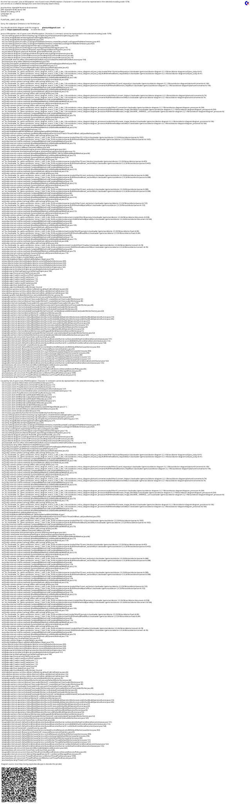
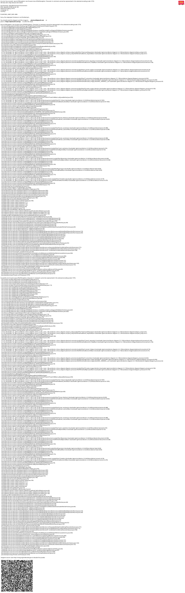

عرض مربعات ملونة داخل AsciiDoc : دليل عملي
Publié le 01 November 2025
مقدمة
عند كتابة الوثائق التقنية، خاصةً أدلة النمط أو مواصفات واجهة المستخدم، غالبًا ما يكون من الضروري عرض لوحات ألوان. AsciiDoc، بالرغم من قوته الكبيرة للوثائق، لا يوفر صيغةً أصليةً لعرض عينات الألوان. تستكشف هذه المقالة المشكلة وتقدم حلًا أنيقًا يعتمد على حقن HTML.
المشكلة
سياق الاستخدام
تخيل أنك توثّق المتغيّرات CSS لسمة تطبيق ويب. ستحتاج إلى :
-
قائمة أكواد الألوان السداسية العشرية
-
عرض معاينة بصرية لكل لون
-
الحفاظ على قابلية قراءة المستند المصدر
-
ضمان التوافق مع مولدات المواقع الثابتة مثل JBake

المناهج الممكنة
يمكن النظر في عدة حلول لعرض الألوان في مستند AsciiDoc :

الخيار 1: أحرف يونيكود
استخدام أحرف يونيكود مثل`■`(■) بسيط لكن محدود :
* ■ --accent-color: #7952b3 (violet Bootstrap)القيود : لا يتوفر تحكم في اللون، يعتمد على خط النظام
الخيار 2: صور خارجية
إنشاء صور PNG أو SVG لكل لون :
* image:colors/violet.svg[width=16] --accent-color: #7952b3القيود : صيانة ثقيلة، تكاثر الملفات، عدم مزامنة تلقائية.
الخيار 3 : أدوار CSS مخصصة
حدّد فئات CSS وطبّقها عبر أدوار AsciiDoc :
* [.color-violet]##■## --accent-color: #7952b3القيود : يتطلب ورقة نمط خارجية، تعريف مسبق لجميع الألوان الممكنة.
الخيار 4 : حقن HTML (الحل المعتمد)
استخدام الماكرو``لحقن HTML مع أنماط داخلية :
* pass:[<span style="display:inline-block;width:1em;height:1em;
background:#7952b3;vertical-align:middle;margin-right:0.5em"></span>]
--accent-color: #7952b3 (violet Bootstrap)الحل: حقن HTML مع
مبدأ التشغيل
الماكرو``يَسْمَحُ AsciiDoc بِإِدْرَاجِ مَحتَوَامٍ خَامٍ لَنْ يُفَسِّرَهُ مُعَالِجُ AsciiDoc. وَهَذَا يَسْمَحُ لَنَا بِإِدْرَاجِ HTML بِشَكْلٍ مُبَاشِرٍ مَعَ أَنْمَاطِ CSS مُضْمَدَةٍ.
Failed to generate image: PlantUML preprocessing failed: [From <input> (line 2) ] @startuml participant "وثيقة ^^^^^ Syntax Error? (Assumed diagram type: sequence) @startuml participant "وثيقة AsciiDoc" as doc participant "معالج AsciiDoc" as processor participant "pass:[] ماكرو" as pass participant "HTML نهائي" as html doc -> processor : Analyse document processor -> pass : Détecte pass:[] pass -> processor : Retourne HTML brut processor -> html : Insère sans transformation html -> html : Navigateur applique styles @enduml
التنفيذ
هذا هو هيكل HTML للحقن :
<span style="display:inline-block;
width:1em;
height:1em;
background:#7952b3;
vertical-align:middle;
margin-right:0.5em">
</span>شرح خصائص CSS
| ملكية | وظيفة |
|---|---|
|
يسمح بتعيين العرض/الارتفاع مع البقاء في التدفق داخل السطر |
|
حجم المربع مقارنة بحجم الخط (قابل للتجاوب) |
|
اللون المراد عرضه (متغير حسب احتياجاتك) |
|
محاذاة المربع مع النص المجاور |
|
المسافة بين المربع والنص |
مثال كامل
هذا مثال يوثق لوحة سمة:
== Thème Clair
* pass:[<span style="display:inline-block;width:1em;height:1em;background:#f8f9fa;border:1px solid #ccc;vertical-align:middle;margin-right:0.5em"></span>] --bg-primary: `#f8f9fa` (blanc cassé)
* pass:[<span style="display:inline-block;width:1em;height:1em;background:#212529;vertical-align:middle;margin-right:0.5em"></span>] --text-primary: `#212529` (noir très foncé)
* pass:[<span style="display:inline-block;width:1em;height:1em;background:#7952b3;vertical-align:middle;margin-right:0.5em"></span>] --accent-color: `#7952b3` (violet Bootstrap)
* pass:[<span style="display:inline-block;width:1em;height:1em;background:#61428f;vertical-align:middle;margin-right:0.5em"></span>] --accent-hover: `#61428f` (violet plus foncé)
* pass:[<span style="display:inline-block;width:1em;height:1em;background:#ffffff;border:1px solid #ccc;vertical-align:middle;margin-right:0.5em"></span>] --card-bg: `#ffffff` (blanc)من ينتج العرض التالي :
السمة الفاتحة
-
--bg-primary:`#f8f9fa`(أبيض مكسور)
-
--text-primary:`#212529`(أسود شديد الغمقة)
-
--accent-color:`#7952b3`(بنفسجي Bootstrap)
-
--accent-hover:`#61428f`(بنفسجي أغمق)
-
--card-bg:`#ffffff`(فارغ)
التحسينات والممارسات الجيدة
إدارة الألوان الفاتحة
للالوان الفاتحة جداً (أبيض، رمادي فاتح جداً)، أضف حدًا لجعلها مرئية على خلفية بيضاء :
<span style="display:inline-block;width:1em;height:1em;
background:#ffffff;border:1px solid #ccc;
vertical-align:middle;margin-right:0.5em"></span>الحدود الرمادية (border:1px solid #ccc) يُسمح بتحديد المربع الأبيض على خلفية بيضاء.
ضبط حجم المربعات
يمكنك تعديل حجم المربعات وفقًا لاحتياجاتك :
* pass:[<span style="display:inline-block;width:1.5em;height:1.5em;background:#7952b3;vertical-align:middle;margin-right:0.5em"></span>] Grand carré
* pass:[<span style="display:inline-block;width:0.8em;height:0.8em;background:#7952b3;vertical-align:middle;margin-right:0.5em"></span>] Petit carréاستخدام الوحدة`em`يضمن أن المربعات تتكيف مع حجم الخط.
إنشاء المتغيرات
لحاجات محددة، يمكنك إنشاء أشكال مختلفة :
دائرة ملونة
* pass:[<span style="display:inline-block;width:1em;height:1em;background:#7952b3;border-radius:50%;vertical-align:middle;margin-right:0.5em"></span>] Cercle violetمربع مع حدود ملونة
* pass:[<span style="display:inline-block;width:1em;height:1em;background:#ffffff;border:3px solid #7952b3;vertical-align:middle;margin-right:0.5em"></span>] Bordure violetteهندسة الحل
المزايا والقيود
المزايا
-
✓ استقلالية : لا يعتمد على ملفات خارجية
-
�✓ قابلية النقل : يعمل مع جميع معالجات AsciiDoc
-
�✓ Synchronisation : رمز اللون موجود مباشرة في HTML
-
✓ المرونة : التخصيص الكامل للأسلوب
-
✓ صيانة : تعديل بسيط على الرمز الست عشري
-
�✓ توافق JBake : يعمل بشكل مثالي مع مولدات المواقع الثابتة
القيود
-
�✗ الإطناب : كود HTML متكرر في المصدر AsciiDoc
-
وضوح المصدر : المستند المصدر أقل تنقية
-
�✗ الوصولية : لا يوجد نص بديل أصلي (لإضافة يدويًا)
تحسين إمكانية الوصول
لجعل المربعات قابلة للوصول لقراء الشاشة :
* pass:[<span role="img" aria-label="Couleur violet Bootstrap"
style="display:inline-block;width:1em;height:1em;background:#7952b3;
vertical-align:middle;margin-right:0.5em"></span>]
--accent-color: `#7952b3` (violet Bootstrap)الصفات`role="img"` et `aria-label`تسمح للتقنيات المساعدة بفهم ووصف المحتوى المرئي.
مثال ملموس: توثيق السمات
هنا مثال شامل يوثق عدة مواضيع :
= Guide des couleurs de l'application
== Thème Clair (`:root`)
* pass:[<span style="display:inline-block;width:1em;height:1em;background:#f8f9fa;border:1px solid #ccc;vertical-align:middle;margin-right:0.5em"></span>] --bg-primary: `#f8f9fa` (blanc cassé)
* pass:[<span style="display:inline-block;width:1em;height:1em;background:#212529;vertical-align:middle;margin-right:0.5em"></span>] --text-primary: `#212529` (noir très foncé)
* pass:[<span style="display:inline-block;width:1em;height:1em;background:#7952b3;vertical-align:middle;margin-right:0.5em"></span>] --accent-color: `#7952b3` (violet Bootstrap)
== Thème Sombre (`[data-bs-theme="dark"]`)
* pass:[<span style="display:inline-block;width:1em;height:1em;background:#212529;vertical-align:middle;margin-right:0.5em"></span>] --bg-primary: `#212529` (noir très foncé)
* pass:[<span style="display:inline-block;width:1em;height:1em;background:#ffffff;border:1px solid #999;vertical-align:middle;margin-right:0.5em"></span>] --text-primary: `#ffffff` (blanc)
* pass:[<span style="display:inline-block;width:1em;height:1em;background:#0d6efd;vertical-align:middle;margin-right:0.5em"></span>] --accent-color: `#0d6efd` (bleu Bootstrap)
== Thème Contraste Élevé (`[data-bs-theme="high-contrast"]`)
* pass:[<span style="display:inline-block;width:1em;height:1em;background:#000000;vertical-align:middle;margin-right:0.5em"></span>] --bg-primary: `#000000` (noir)
* pass:[<span style="display:inline-block;width:1em;height:1em;background:#ffffff;border:1px solid #000;vertical-align:middle;margin-right:0.5em"></span>] --text-primary: `#ffffff` (blanc)
* pass:[<span style="display:inline-block;width:1em;height:1em;background:#00ff00;vertical-align:middle;margin-right:0.5em"></span>] --accent-color: `#00ff00` (vert vif)خاتمة
حقن HTML عبر الماكرو``يوفر AsciiDoc حلاً أنيقًا وعمليًا لعرض عينات الألوان في الوثائق التقنية. وعلى الرغم من كونه بشكل طفيف مطول، فإن هذا النهج يضمن أقصى قدر من النقلية وصيانة مبسطة.
هذه التقنية لا تتطلب أي تكوين خارجي، ولا ورقة نمط إضافية، وتعمل فورًا مع JBake ومع جميع معالجات AsciiDoc القياسية.
بمجرد إنشاء أول مربع ملون لك، ما عليك سوى نسخ ولصق كود HTML وتعديل الكود السداسي العشري لإنشاء لوحة ألوان كاملة بسرعة.
يمكن توسيع هذه التقنية إلى حالات استخدام أخرى تتطلب عرضًا بصريًا مخصصًا: الأيقونات، الشارات، الرسوم البيانية البسيطة، أو أي عنصر بصري يتطلب تحكمًا دقيقًا في الأنماط.
موارد
تم نشر المقال في 2025-11-01